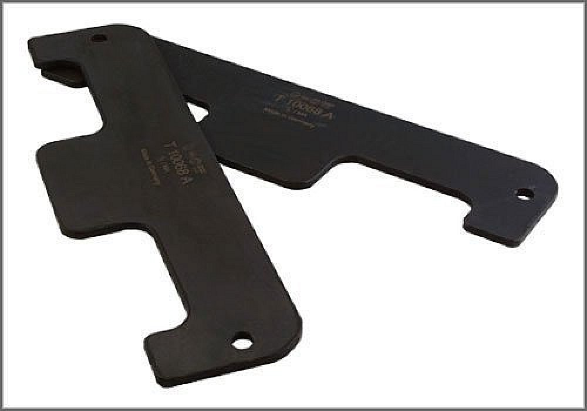

Camshaft Align. Fixtures - AST Tool # T 10068 A
Camshaft Align. Fixtures
AST tool# T 10068 A

Camshaft Alignment Fixtures. Applicable to: VW 2.8L VR6 (4V), 3.2L VR6 (4V) and 6.0L 12 cylinder (4V).
- Made in Germany
- Call AST for Pricing
Contact AST for pricing.
Assenmacher Specialty Tools
1-800-525-2943